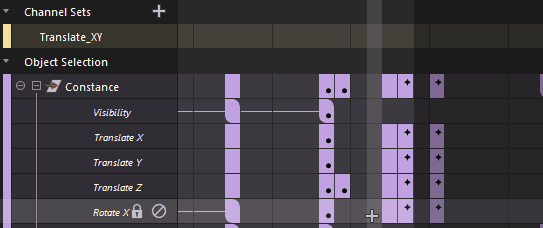

“摄影表”(Dope Sheet)大纲视图以层次结构显示选定对象的属性，并根据类型和对象将其分组，以便可以同时操纵整组属性。例如，大纲视图中列出的所有对象的旋转属性将汇总在一起，并可在名为“旋转”(Rotate)的摘要组中进行操纵。
有关在“摄影表”(Dope Sheet)大纲视图中单击鼠标右键时提供的选项的描述，请参见“摄影表”(Dope Sheet)大纲视图上下文菜单主题。
“摄影表”(Dope Sheet)大纲视图
- 将鼠标放在大纲视图区域上，然后使用滚轮快速地上下浏览属性。
- 如果启用“动画”(Animation)首选项（在“设置”(Settings)下）的“曲线图编辑器”(Graph Editor)部分中的“显示资产”(Display Assets)选项，则可以在“摄影表”(Dope Sheet)大纲视图布局中包括摄影机和灯光等资产。
- 场景摘要(Scene Summary)
- 用于查看场景中所有对象的属性，让您大概了解对场景中所有对象执行的操作。默认情况下，不会显示“场景摘要”(Scene Summary)。若要显示它，请从“摄影表编辑器”(Dope Sheet Editor)的“视图”(View)菜单中选择“场景摘要”(Scene Summary)。
- 摄影表摘要(Dope Sheet Summary)
-
“摄影表摘要”(Dope Sheet Summary)显示所有已设置关键帧并按属性类型组织的选定对象的属性。默认情况下，会显示“摄影表摘要”(Dope Sheet Summary)。若要隐藏它，请从“摄影表编辑器”(Dope Sheet Editor)的“视图”(View)菜单中选择“摄影表摘要”(Dope Sheet Summary)。
- 通道集(Channel Sets)
-

根据属性创建通道集
通道集是可以创建的自定义属性集。
单击“通道集”(Channel Set)标题旁边的 + 以创建通道集。通过禁用“摄影表编辑器”(Dope Sheet Editor)的“视图”(View)菜单中的“通道集”(Channel Sets)，显示或隐藏“通道集”(Channel Sets)。
使用鼠标中键将属性拖动到“通道集”(Channel Set)中以添加它们。
请参见在摄影表中创建通道集。
- 对象选择(Object Selection)
-
使用“对象选择”(Object Selection)可查看任何选定对象的属性。如果在“视口”(Viewport)、“大纲视图”(Outliner)或“节点编辑器”(Node Editor)中未选择对象，则此区域中不会显示该对象的信息。默认情况下，会在“摄影表编辑器”(Dope Sheet Editor)中显示“对象选择”(Object Selection)。单击“对象选择”(Object Selection)标题旁边的箭头可展开或收拢视图。
- 属性(Attributes)
-
大纲视图中的对象属性
单个属性是“摄影表”(Dope Sheet)大纲视图层次的最低级别。